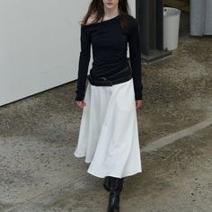

Minimalism in fashion is a trend that emphasizes simplicity, clean lines, and a focus on quality rather than quantity. This aesthetic is characterized by a pared-down approach to clothing, where the designs are uncomplicated, often utilizing neutral colors, subtle patterns, and timeless silhouettes. The goal of minimalism is to create elegant, understated looks that can be effortlessly styled and mixed and matched.
Rather than following fast-fashion trends, minimalist fashion promotes timeless items that can be worn year after year. This makes the wardrobe more sustainable and less reliant on fleeting trends.
. ___________________________________________________________________________________________________________________________________________________________________________________________________________________________________________________________________________________________________________________________________________ .
In a world driven by consumerism, renowned actress Emma Watson has emerged as a champion of minimalism and decluttering. Beyond her successful acting career, Watson has been actively involved in advocating for sustainable fashion, ethical living, and embracing simplicity. One notable aspect of Watson’s commitment to minimalism is her stance on sustainable fashion. She is often seen wearing eco-friendly brands on the red carpet and has collaborated with designers who prioritize ethical practices. By using fashion as a platform for change, she encourages others to make informed choices about their clothing purchases and supports brands that align with her values.
Accessories in minimalist fashion are kept subtle but impactful. Small, delicate jewelry, such as gold necklaces or simple rings, complements the understated clothing. Bags are often structured, in neutral tones, and made from sustainable materials. Footwear tends to be classic, such as leather boots or simple flats, ensuring comfort and versatility.
The minimalist trend also extends to the importance of fit and tailoring. Clothes are meant to be well-fitted, creating a clean and polished look. This style reflects a shift away from clutter and excess, focusing on quality over quantity. As consumers increasingly seek out sustainable alternatives and timeless styles, minimalist fashion continues to rise in popularity, aligning perfectly with a more conscious, ethical approach to fashion.